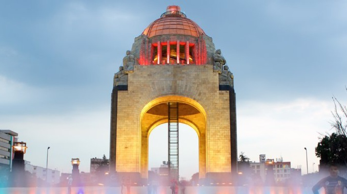
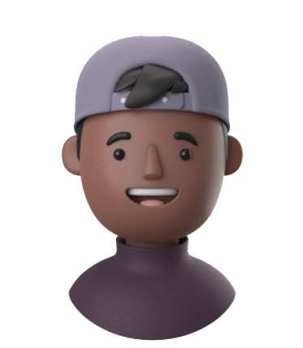

TecnoInc.
Mexi Tour, dies ist ein Projekt, das Touristen dabei helfen soll, die besten Sehenswürdigkeiten in Mexiko-Stadt zu finden
Am bekanntesten unter dem verkürzten Namen "El Ángel", ist eine Siegessäule an einem Kreisverkehr an der Hauptverkehrsstraße Paseo de la Reforma in der Innenstadt von Mexiko-Stadt.

Genannt die "Kathedrale der Kunst in Mexiko". Das Gebäude befindet sich auf der Westseite des historischen Zentrums von Mexiko-Stadt neben dem Alameda Central Park.

Befindet sich auf dem Chapultepec-Hügel im Park Chapultepec in Mexiko-Stadt. Der Name Chapultepec ist das Nahuatl-Wort chapoltepēc, was „auf dem Hügel der Heuschrecke“ bedeutet.
Es ist ein Wahrzeichen und Denkmal zum Gedenken an die mexikanische Revolution. Es befindet sich an der Plaza de la República.

Ist der gebräuchliche Name des Hauptplatzes im Zentrum von Mexiko-Stadt. Der Platz war früher einfach als „Hauptplatz“ oder „Waffenplatz“ bekannt, und heute ist sein offizieller Name Plaza de la Constitución.
 Gutiérrez Hernández Jose Eduardo
 Márquez Valdes Carlos Mauricio
Márquez Valdes Carlos Mauricio
 Morales Ruiz Andres Isaac
Morales Ruiz Andres Isaac